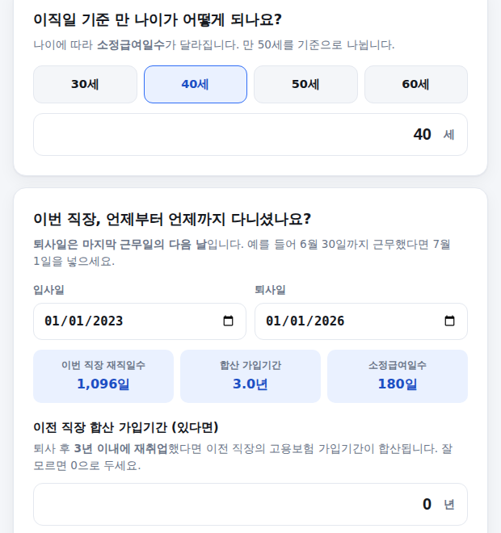
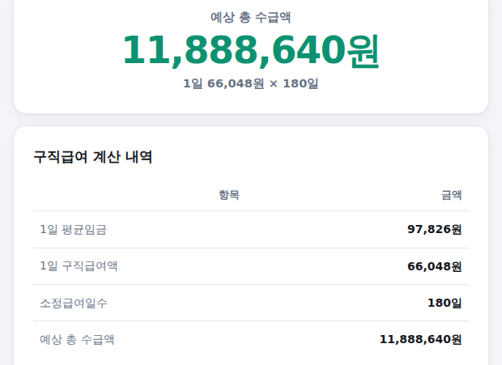

실업급여(구직급여)가 얼마나 나올지 궁금해서 검색해봐도, 대부분 계산 공식만 설명하고 정작 내 상황에 맞는 숫자는 알려주지 않는 경우가 많습니다. 나이·가입기간·최근 급여만 넣으면 1일 구직급여액과 총 예상 수급액을 바로 계산해주는 계산기를 만들었습니다. 쓰는 법은 아래와 같습니다.
-
나이, 재직기간, 이전 직장 가입기간 입력
이직일 기준 만 나이와 이번 직장 입사일·퇴사일을 넣으면 재직일수가 자동 계산됩니다. 퇴사 후 3년 이내에 재취업했던 이전 직장이 있다면, 그 가입기간도 합산 가입기간에 더해서 넣어보세요. 나이와 합산 가입기간에 따라 화면에 소정급여일수가 바로 표시됩니다.

나이·재직기간 입력 화면
-
이직 사유 선택
해고·권고사직·계약만료 같은 비자발적 이직만 원칙적으로 수급 대상입니다. 자발적으로 퇴사했다면 원칙적으로 대상이 아니라는 안내가 뜨지만, 정당한 사유가 있다면 예외적으로 인정될 수 있습니다.
이직 사유 선택 화면
-
퇴사 직전 3개월 급여 입력
세전 월 급여를 넣습니다. 퇴직금 계산기와 마찬가지로, 연간 상여금과 전년도 연차수당은 3/12만큼 평균임금 계산에 반영됩니다. 평균임금이 통상임금보다 적은 특수한 경우라면 통상임금도 넣을 수 있습니다.
급여 입력 화면
-
결과 확인 — 예상 총 수급액
맨 위에 예상 총 수급액이 크게 나오고, 아래 표에서 1일 평균임금·1일 구직급여액·소정급여일수가 각각 얼마인지 확인할 수 있습니다. 1일 구직급여액이 2026년 상한액(68,100원)이나 하한액(66,048원)에 걸리면 화면에 바로 안내됩니다.

결과 화면
이 계산기는 "받을 수 있다는 전제"로 계산합니다
실제 수급 여부는 이직 사유, 근로 의사와 능력, 적극적인 재취업 활동 여부 등을 관할 고용센터가 심사해서 결정합니다. 이 계산기는 그 조건을 통과했다고 가정했을 때 받는 금액만 계산합니다.
합산 가입기간의 "3년 이내 재취업" 조건
소정급여일수를 정하는 가입기간은 생애 전체 고용보험 가입기간을 기준으로 하지만, 이전 직장을 그만둔 뒤 3년이 지나서 재취업했다면 그 이전 기간은 합산되지 않습니다. 공백기가 길었다면 이번 직장 재직기간만 넣으시는 게 정확합니다.
계산은 참고용이며 노무 조언이 아닙니다. 실제 수급 자격·금액은 관할 고용센터 심사에 따라 달라질 수 있습니다. 기준: 고용보험법 제41조·제46조·제50조 및 별표1(소정급여일수), 2026년 공개 자료 교차검증.